Studio: Missions
Every level in the game is generated from a mission template, one file each in content/defs/missions. A template
says how many decks there are, how the way through is grown, how many soldiers and rooms and loops, which room
archetypes it draws from, what the loot rolls from, and a whole lot more.
Reading those numbers tells you very little about what a level actually feels like. So Missions mode generates a level
from the template right there, draws it from above, and regenerates it after every change. You can click through it
room by room, ask it why a room is what it is, and then make a dozen more seeds and count them. Under the templates are
the things every mission shares: how windows break (breaches.json), how rooms' doors behave (doors.json) and what
the fleet finds to raid on the star map (campaign.json).
How to open it
Click Missions on the mode bar at the top, or start Studio straight into it:
dotnet run --project src/LastFleet.Studio -- --mode missions
Add --seed <n> to open on a particular seed. The first level takes a few seconds to make ("Making the level..."), so
give it a moment.
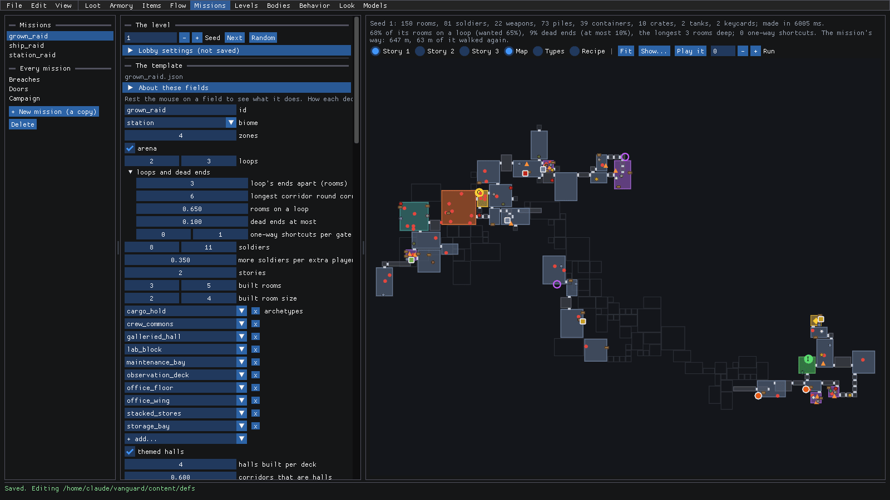
There are three panels:
- The list (left): the mission templates (
grown_raid,ship_raid,station_raid), then Every mission: Breaches, Doors and Campaign. + New mission (a copy) starts a new template from the selected one. - The level and the template (middle): at the top, the level's Seed (with -, +, Next and Random) and the Lobby settings a lobby would apply. Below that, every field of the template, in plain words. Rest the mouse on one to see what it does. At the very bottom are the Checks.
- The map (right): the level from above. The two lines above it sum the level up (rooms, soldiers, weapons, piles, containers, crates, keycards, how long it took to make), and say how linear it is: the share of rooms on a loop against what the template wanted, and the share of dead ends. Then the buttons: the stories, Map, Types and Recipe, Fit, Show... and Play it.
Walk through a level
Is this template any good? One level won't tell you, but it's where you start. Here's the flow:
Pick
grown_raidin the list.Press Next to go to the next seed. The level is made again and the lines above the map update: seed 2 has 155 rooms, 80 soldiers, 66% of its rooms on a loop (wanted 65%) and 10% dead ends (at most 10%). Phew!
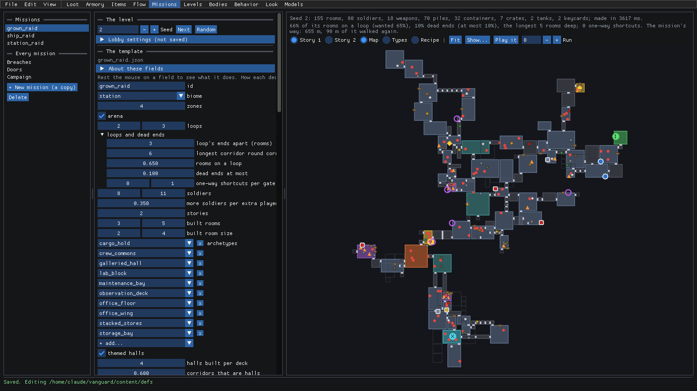
This template's levels are two stories tall. Pick Story 2 to see the upper floors. Rooms on other stories are drawn as outlines, so you can tell what's under what.
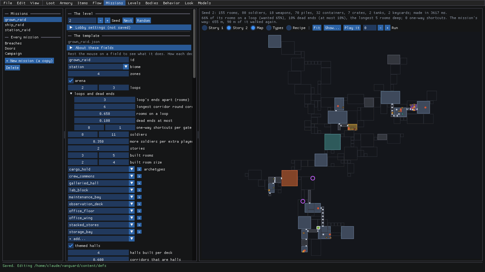
Go back to Story 1 and turn the mouse wheel over the map to zoom in. Once you're close, each room is labeled with what it's for and its deck (
E d2is a room on deck 2), and the marks are easy to read: red dots are soldiers, orange triangles weapons, the yellow diamond a keycard, the purple rings hull breaches. Drag to move the map, and Fit brings it all back on screen.
Ask a room why it's there
Generated levels make a lot of decisions. When one looks wrong, you want to know why it happened, not just what happened. So click on it!
Click a room on the map. It gets a yellow outline, and the panel under the map says what it is: its archetype, its size, how many stories, its deck and the deck's theme, and what's in it.
It also says why it got its type. This one was typed
maintenance_bay, "drawn by weight from those the rules left", and lists what else it could have been and how likely (kit 70%, cargo_hold 2%...), and why each other type was ruled out.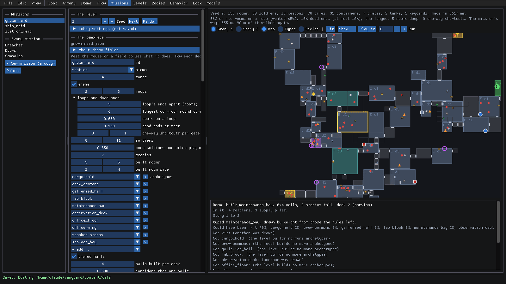
Scroll down the panel. Under Placement rules here is how each placement rule did in this room, as "placed out of wanted". This room wanted a tank and got none, and it says why the spots it tried didn't work: "the mission's condition 81, something there 38, a spawn or item there 8". The Rule button next to each one opens that rule in Levels mode.
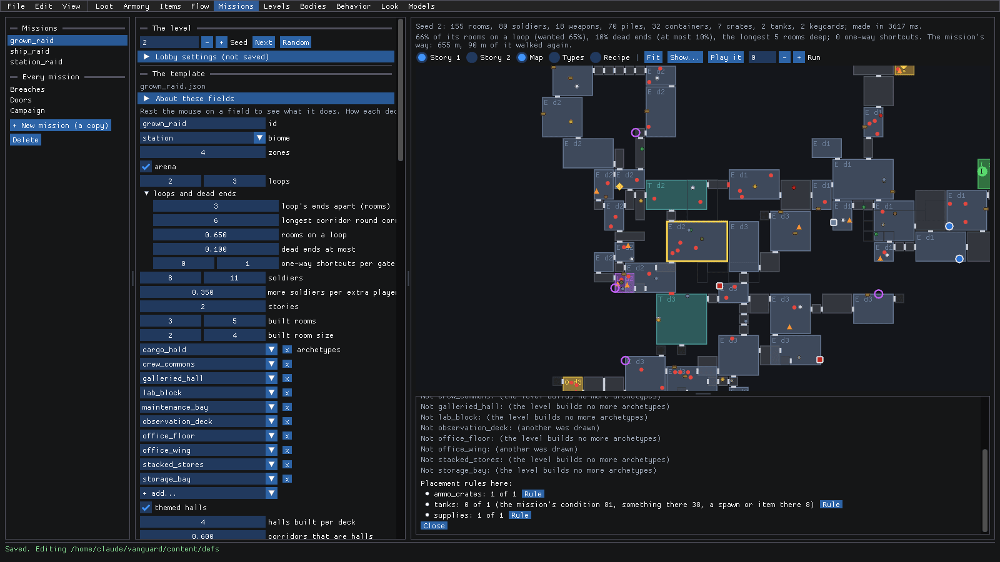
Now click a mark instead, like a weapon's orange triangle. The panel shows the weapon that was rolled (here a Bailiff HC-44 of the Hunt, a hand cannon from
loot.station.stashat item level 3). Below it, you can pick the table everything of its kind in this mission rolls from (that changes the template'sloot), and there's an Edit button for the table itself.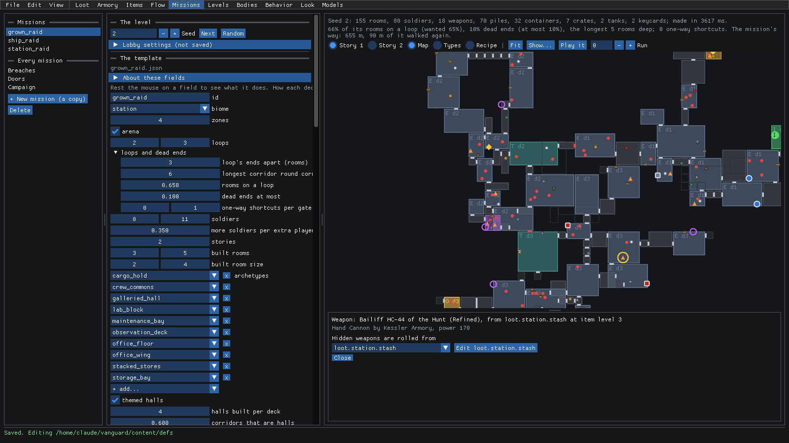
Press Close, then pick Types above the map. Now the rooms are drawn as they're connected, from the insertion on, each colored by the type it was given (the kit's own rooms grey, each archetype its own color, gates in red). Rest the mouse on one to see why it got its type, and click it to see it below.
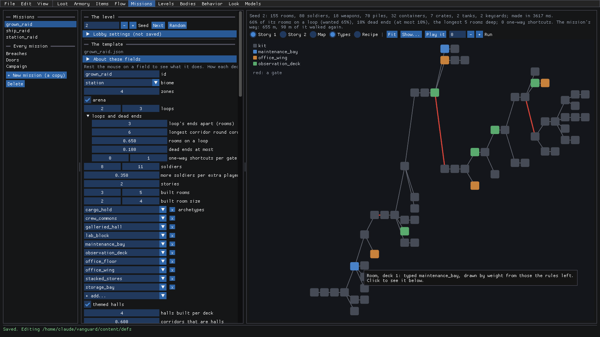
Change how a level grows
A template like grown_raid grows its level in steps: first the main path, then the keycards, the side rooms, the
loot rooms, then loops and typing. That's its recipe, and you can see each step as it goes. It's a great way to see
exactly where something went sideways!
Pick Recipe above the map. The steps show as nodes, left to right: Main path, Keycards, Side rooms, Loot rooms, then Loops, Type rooms and The level. Each says what it adds and on which decks. The first one is picked, so you see its fields below (5 to 7 rooms a deck, half of them on the last deck) and the mission's graph after it: 27 rooms and no keycards yet.
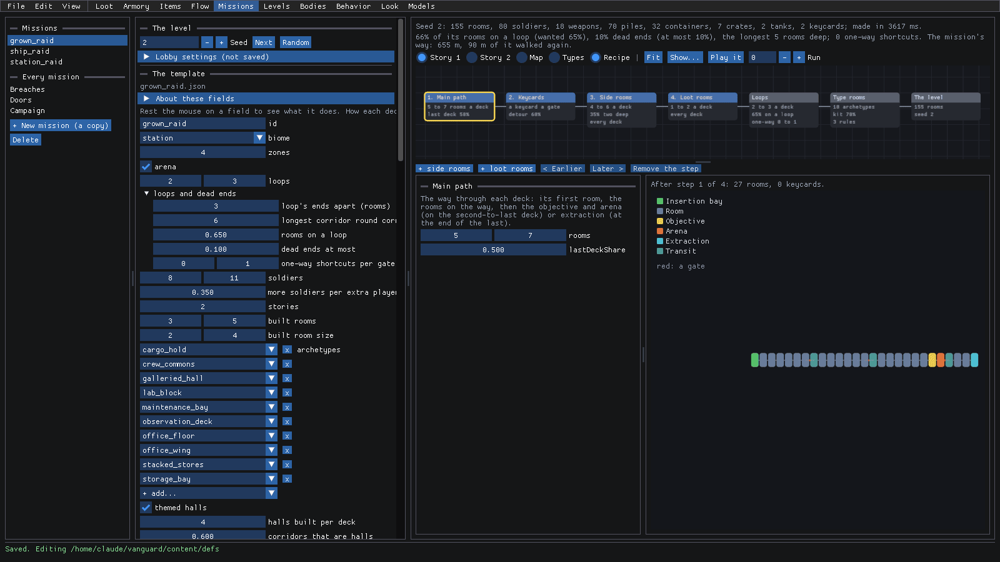
Click 3. Side rooms. Now you see its fields (
count4 to 6,deeperChance0.35) and the graph after three steps: 54 rooms and both keycards.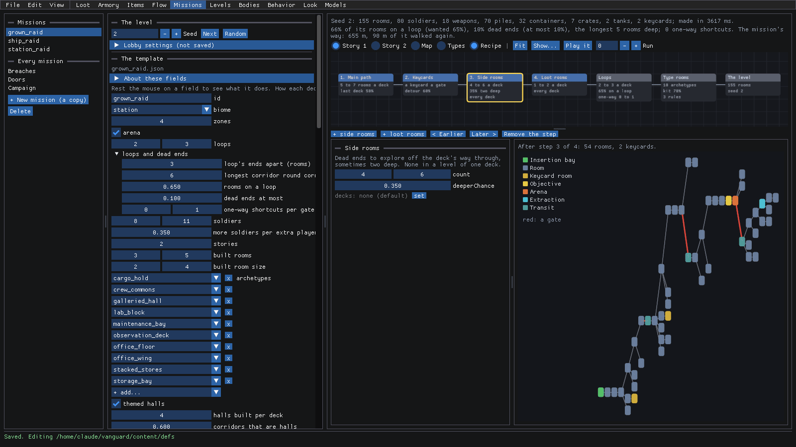
Want more loot rooms? Press + loot rooms. A new step, 4. Loot rooms, goes in after the picked one, and the level is made again. The line above the map tells the story: 163 rooms now, and 28 weapons instead of 18. The template shows (not saved) and the list marks it with a
*.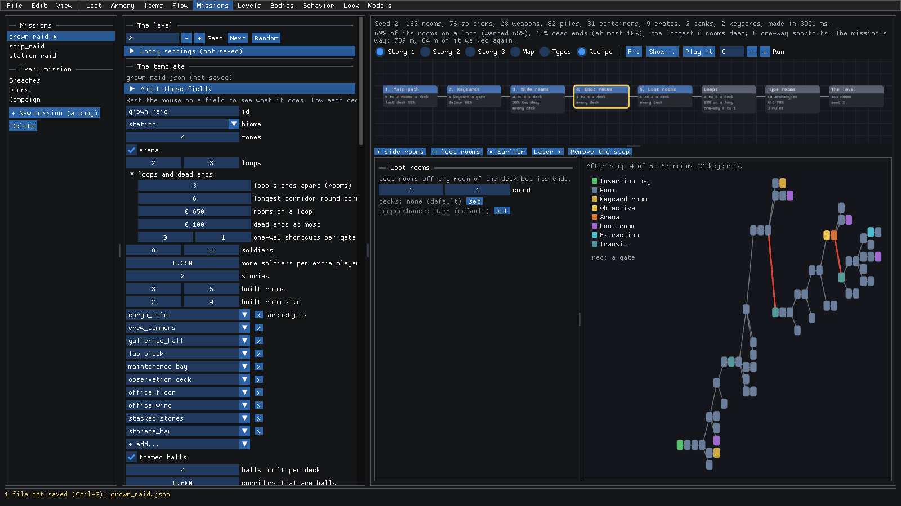
< Earlier and Later > move the picked step, and Remove the step takes it out (the main path and the keycard stay). Keep it with Ctrl+S, or take it back with Ctrl+Z.
Count a dozen levels
One good level doesn't mean much. What about the next eleven? That's what the Checks are for.
- Scroll the template all the way down to Checks. The first line says whether every table the template names exists ("Every table it names is there.").
- Pick 12 (or 100 or 1000, if you've got the time) and press Make 12 levels and count. A bar shows how far it's got, and Stop keeps what's been made so far.
- When it's done, you get a table: a row for each seed, starting from the one shown, with its rooms, soldiers, guns, piles, boxes, crates, keys, loop and dead end percentages and one-way shortcuts. Above them are the fewest, the average and the most. The green line says every level meets the template's loop rules.
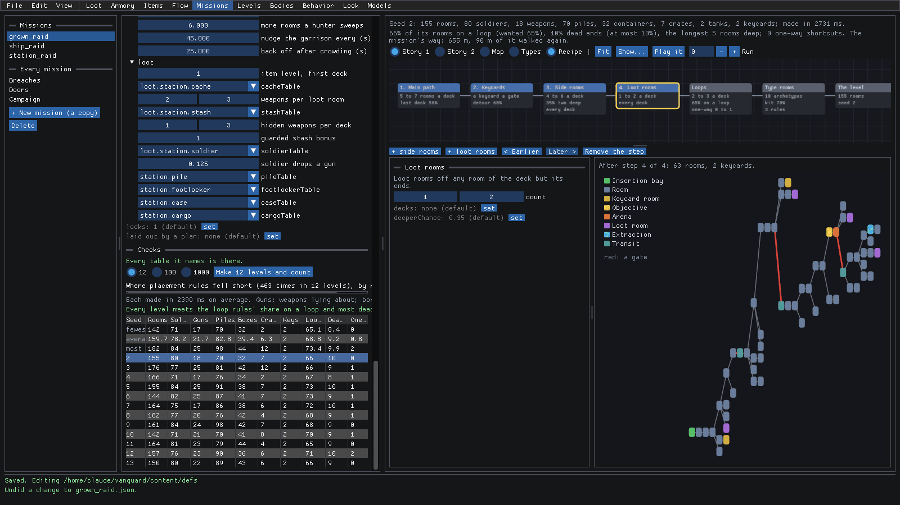
Drag the bar between the template and the map to make the template wider, and the table gets roomier.
Look over a ship raid
ship_raid works differently from grown_raid. It's laid out by a plan: the level is the inside of a ship whose
shape comes from Levels mode's Plans, with the mission read into it.
- Pick
ship_raidin the list and Map above the map. The template has a laid out by a plan section at the top: its plans, the exits it boards by, how many zones, how long the way through must be, the room tags keycards go in, the objective, the exits it's taken off by, its escape pods, and more further down. - Tick Threat above the map. Each room is shaded by how hard it's defended, cool to red. The red end is where the last zones are.
- Click a room. The panel names its threat (this one is 1.10), along with what's in it and its placement rules.
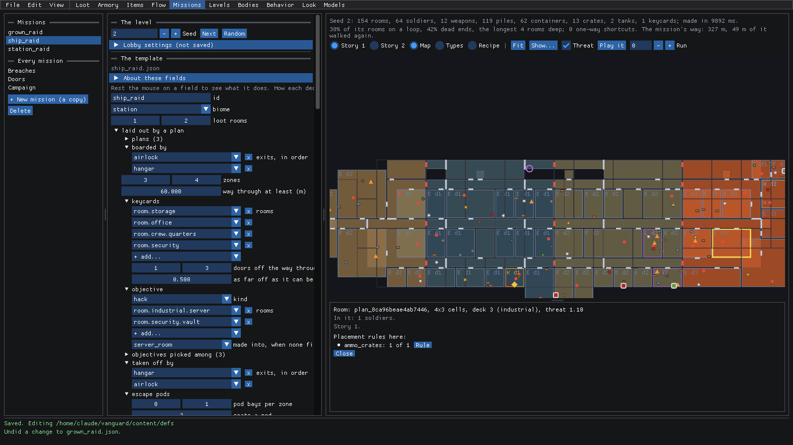
Tune what every mission shares
Some things are the same in every mission: how windows onto space break, how doors behave, and what the fleet finds to raid on the star map. They're under Every mission in the list.
Click Breaches. Here's how a window takes damage (
toughness, and the shares of it at which itscracksshow and spread), thepullof a breach, itstimersand itslook. The line under the fields sums it up: "A window takes 600 (about 4 grenades). Blown out, its doors seal after 8 s; its shutter closes at 20 s; the doors unseal 6 s later."Drag toughness to the right to make windows tougher. The summary follows along: at 756 it takes about 5 grenades.
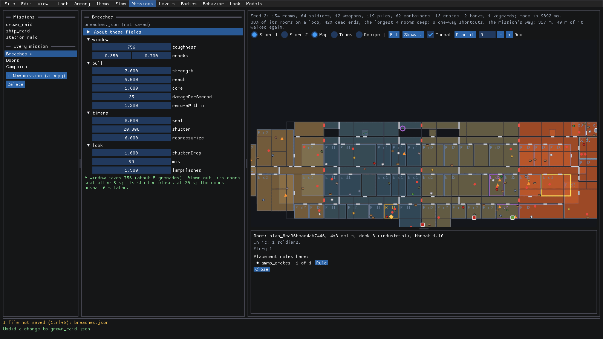
Click Doors. Sliding doors (
auto), doors opened by hand (byHand) and how the swarm batters them (swarm), summed up in a line again. Which rooms get hand-opened doors is up to each archetype'sroomDoor, in Levels mode.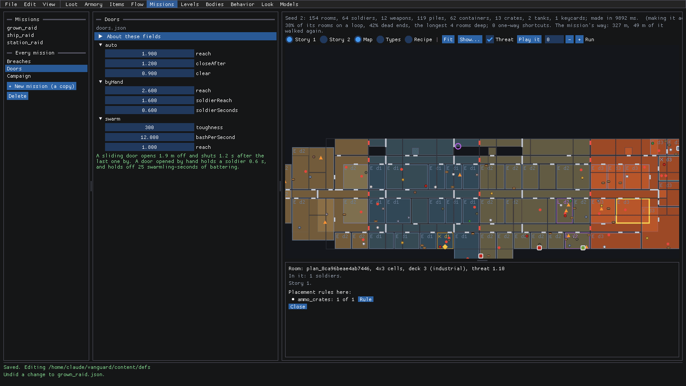
Click Campaign, and open targets. Each target has its
id, thenamethe star map gives a ship of it, themissionit's raided with, theplana ship raid is laid out by, itsweightand the sector it turns upfrom. Under them is the share of each sector's systems each target gets.Open carrier and drag its weight up. The shares redraw right away: at a weight of about 1.06, carriers go from 14% to 19% of sector 2's systems.
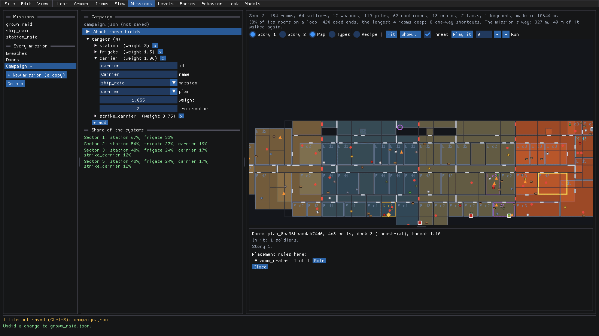
These three files show as not saved like any other. Ctrl+S writes them, and File > Revert to saved throws the change away.
Where to next
- The reference for this mode is Missions: the procedural levels.
- What levels are built from (the archetypes, rules, props, networks, typing and plans; the Rule buttons jump there) is in levels.md.
- The loot tables a mission rolls from are edited in Loot and Items mode, and you can see how they all connect in flow.md.